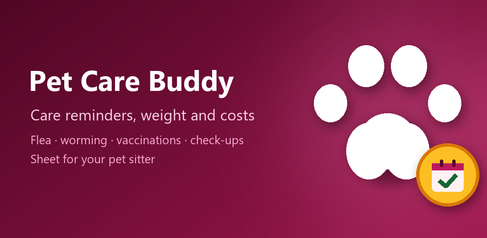
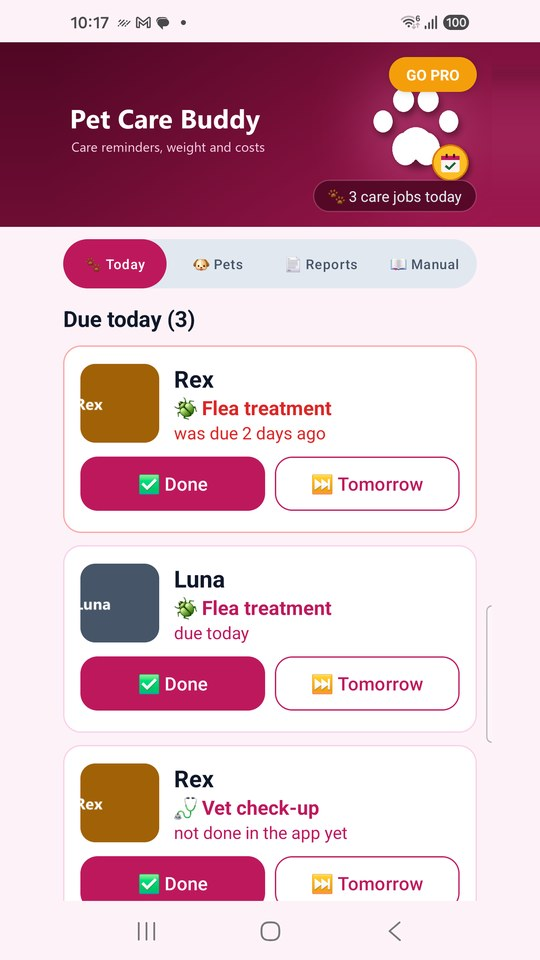
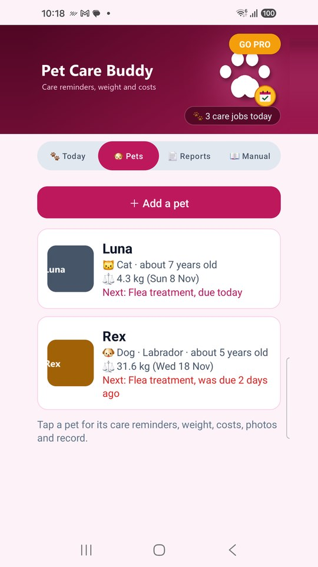
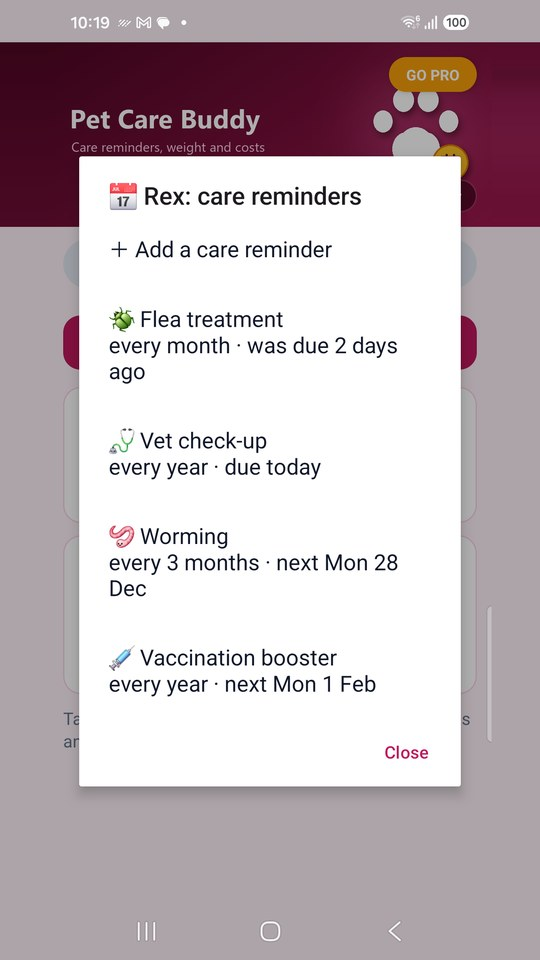
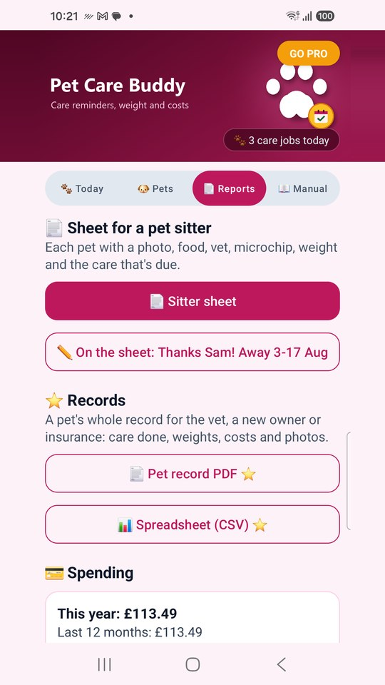

🌍 International version

Everything below is the same text as the Manual in the app (📖 Manual tab).
Pet Care Buddy remembers when each of your pets is due flea and worming treatments, vaccination boosters, vet check-ups, grooming and anything else you add. It reminds you on the day, keeps a log of what was done, their weight and what they cost, and makes a sheet for a friend, neighbour or pet sitter.
You set the dates and how often: the app doesn't give medical advice. Ask your vet what suits your pet.
On 🐶 Pets, tap ＋ Add a pet. Type its name and choose the kind of pet. The breed, year of birth, microchip number, vet, food and notes are optional, and are printed on the sitter sheet.
Next, tick the usual reminders for that kind of pet (for a dog or cat: flea treatment every month, worming every 3 months, a yearly vaccination booster and a yearly check-up). Then take a photo or choose one, or skip it.
Tap a pet later to change its details, add reminders, weights, costs and photos, or delete it.
Each reminder has a kind (flea treatment, worming, vaccination booster, vet check-up, tick treatment, grooming, nail trim, teeth cleaning, clean bedding or cage, or other), a name you can change, how often in days and when it was last done.
Tap Week, Month, 3 months or Year, or type your own number of days. If it was done before, set Last done to Today or pick the date: the next date counts on from there. A reminder that was never done is due straight away.
Your vet's advice comes first: treatments and boosters differ by product, pet and country.
🐾 Today shows the care that's due today or overdue, with the pet's photo. Tap ✅ Done when it's done: the next date is set from today. Tap ⏭️ Tomorrow to move it on by one day.
Done earlier but forgot to tap it? Tap the reminder › 📅 Done on another day and pick the date. Below, Coming up lists the next jobs with their dates.
Tap a pet › ⚖️ Weight › ＋ Add a weight. Type the weight from your scales or the vet's, and the date it was weighed. The list shows each weight with the change since the one before.
Weights are shown in kilograms or pounds: change it on 📄 Reports › Units and currency. The weights you already saved are converted for you.
Tap a pet › 💳 Costs › ＋ Add a cost: the amount, what it was for (vet visit, vaccination, food, insurance) and the date. 📄 Reports shows what you spent this year and in the last 12 months, for all pets and for each one.
Amounts are in your phone's currency, written the way your phone writes money. To use another currency, go to 📄 Reports › Change the currency. Amounts are never converted: they keep the numbers you typed.
Tap a pet › 📷 Add a photo: take one with your camera app or choose one you already have. The newest photo is the pet's picture in the app and on the sitter sheet. 🖼️ Photos lists them all; tap one to see it or delete it.
The app doesn't need camera or storage permission: Android's own camera app and photo picker hand it only the photo you choose.
📄 Sitter sheet: a PDF with each pet's photo, food, vet, microchip, latest weight and every care reminder with its next date. Add a line under the title, for example the sitter's name, your dates away or how to reach you.
⭐ Pro adds a pet record PDF (details, care schedule, everything done, weights with the change each time, costs and photos), handy for a new vet, a new owner or an insurance claim, and a spreadsheet (CSV) with every care done, weight and cost, with the currency in its own column.
On a day any pet's care is due (or overdue), one note arrives at about 09:00 listing it. If your phone was off, it comes when the phone is on again.
Android asks once if the app may send notifications. If you said no, 📄 Reports shows 🔕 Notifications are blocked: tap it to allow them. You can switch the reminders off there too.
Free: 2 pets, all care reminders, weights, costs, photos and the sitter sheet. No ads.
Pro, one payment for life (no subscription): as many pets as you like, the pet record PDF and the spreadsheet (CSV). Tap GO PRO on the banner. Already bought it on this Google account? Tap Restore purchase in the same pop-up.
No account and no sign-in. Your pets, reminders, weights, costs and photos stay on this phone: Pet Care Buddy has no servers and sends nothing anywhere. The PDFs and the spreadsheet only leave the phone when you share them.
Uninstalling the app deletes everything in it, so share the sitter sheet or a pet record (Pro) now and then if you'd like a copy.
Pet Care Buddy v1.0 (Build 1)
Publisher: AppStack Studio
| Question | Many pet apps | Pet Care Buddy |
|---|---|---|
| Reminders | A single calendar alarm | Every treatment and check-up repeats by itself: tap ✅ Done and the next date is set |
| When you're away | Notes in a message | A sitter sheet PDF: photo, food, vet, microchip and what's due, for each pet |
| Weight and costs | Often a paid extra | Weight (kg or lb) and costs (any currency) included free |
| Ads and account | Often ads or a sign-in | No ads, no account: everything stays on your phone |
| Price | Monthly subscriptions | Free for 2 pets; Pro is one payment for life (no subscription) |

1. What's due today
Overdue in red; tap ✅ Done and the next date is set.

2. Your pets
Each with its latest weight and next care.

3. Care reminders
Flea, worming, vaccination, check-up and more, each on its own schedule.

4. Sheets and spending
A sheet for your pet sitter, and what you spend, in your currency.
Screenshots: Pet Care Buddy 1.0 on Samsung Galaxy phones, with made-up test pets.